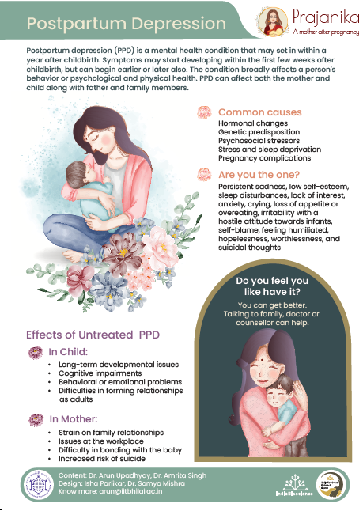
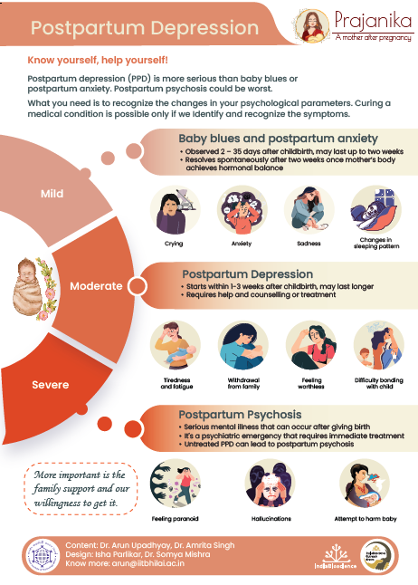
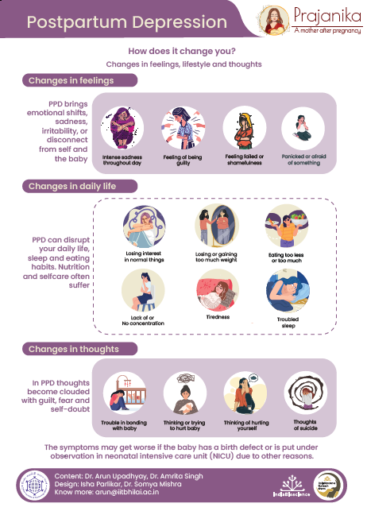
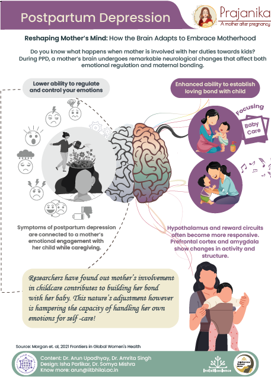
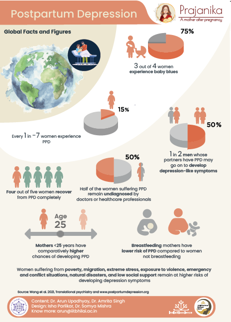
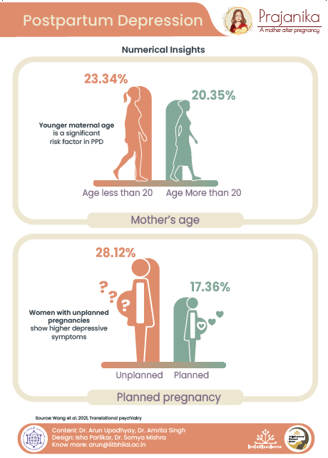
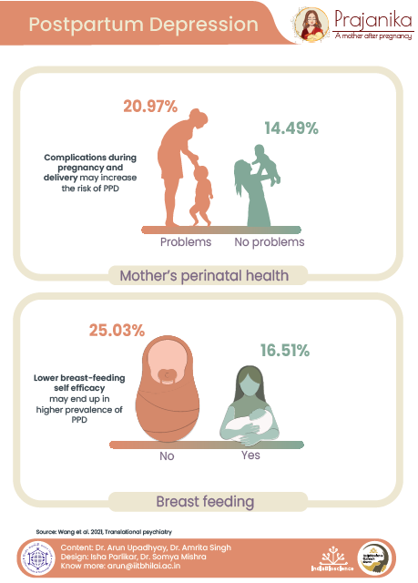
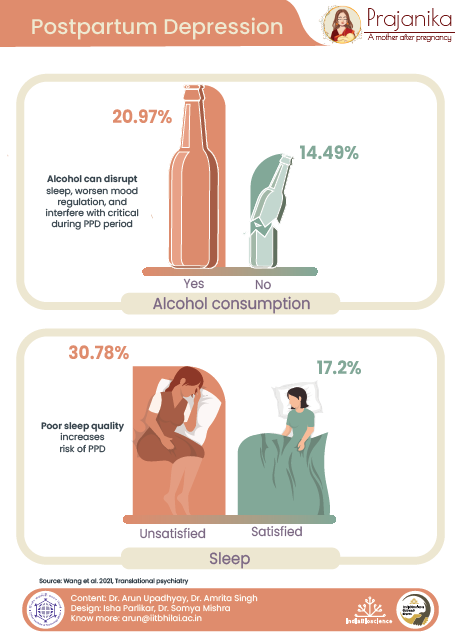
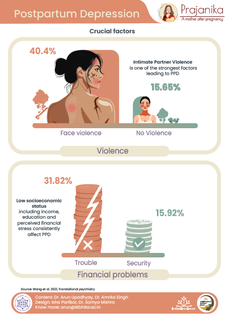

Postpartum Depression - A Mother After Pregnancy
Understanding PPD symptoms, neurological shifts, global statistics, and crucial support mechanisms.










1 / 10
Hover over the image to pause auto-scroll.